Setup & Text Prompts
Three custom prompts were generated and run at two different num_inference_steps values (20 and 80) to observe the effect on quality and prompt alignment.
Random seed: 42
Prompt 1 — "a fluffy fat cat eating pizza"
.png)
.png)
Prompt 2 — "a monkey with cookies"
.png)
.png)
Prompt 3 — "sleeping bunny on hamburger"
.png)

More inference steps produce sharper textures and better composition at the cost of compute. All subsequent parts use the same seed.
Classical Denoising
Gaussian blur applied directly to noisy images. Reduces noise but blurs fine detail and uses no learned priors.
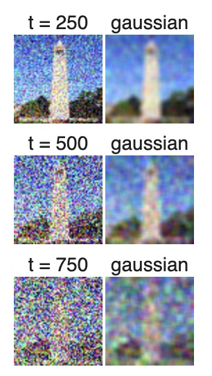
One-Step Denoising
The UNet predicts and removes all noise in a single forward pass. Much better than Gaussian blur but can leave artifacts without iterative refinement.
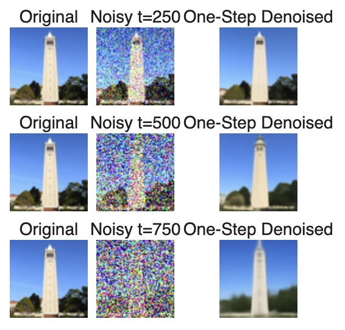
Iterative Denoising
The sampling loop steps backward through the diffusion trajectory, producing much cleaner and more natural reconstructions than one-step denoising.
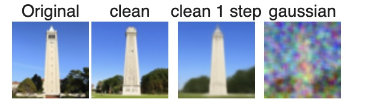
Diffusion Model Sampling
Starting from pure Gaussian noise with i_start = 0 and the prompt "a high quality photo", the loop generates novel images entirely from scratch.
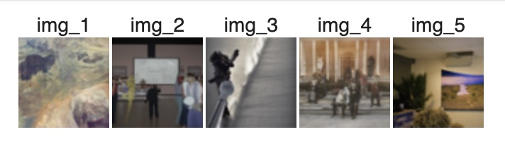
Results are recognizable but sometimes lack coherence — addressed with CFG in the next section.
Classifier-Free Guidance (CFG)
Noise estimate: ε = εu + γ(εc − εu) with γ = 7. Higher guidance scale trades diversity for sharpness and coherence.
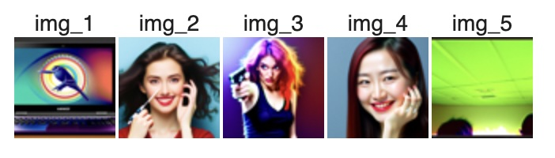
CFG samples are noticeably sharper and more structured compared to Part 1.5.
Image-to-Image Translation (SDEdit)
A real image is noised to a chosen timestep, then denoised with CFG. Lower starting indices preserve more of the original; higher indices allow more creative divergence.
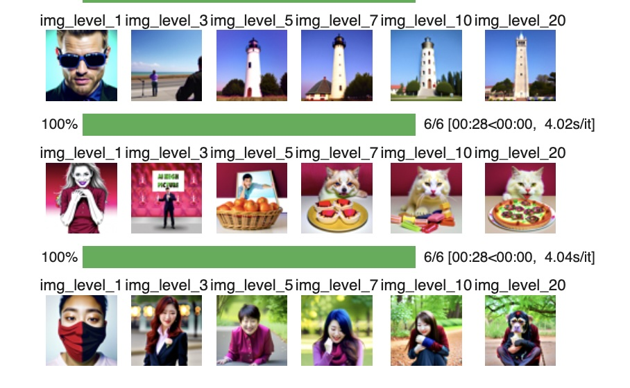
Editing Web & Hand-Drawn Images
SDEdit works especially well on non-photorealistic inputs — sketches and web images are projected onto the natural image manifold while their coarse structure is preserved.
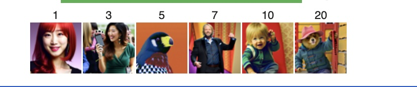
Inpainting
At each denoising step, pixels outside the edit mask are forced back to the original image (with appropriate noise for that timestep), while pixels inside the mask are freely generated. This follows the RePaint algorithm.
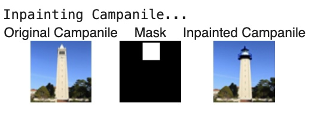
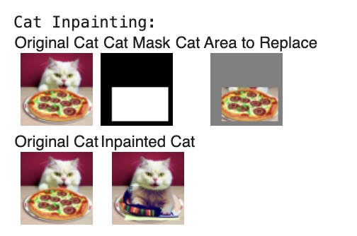
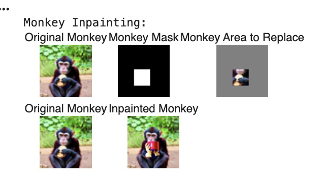
Text-Conditional Image-to-Image Translation
Same as SDEdit but the denoising is guided by a descriptive text prompt rather than "a high quality photo". The output gradually resembles both the original image and the text description as the starting noise index increases.
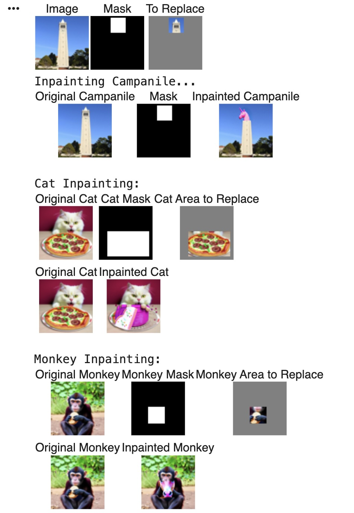
Visual Anagrams
At each step, the image is denoised once upright with prompt A and once flipped with prompt B. The two noise estimates are averaged, producing an image that looks like scene A right-side up and scene B when flipped 180°.
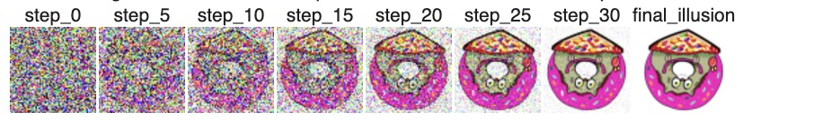
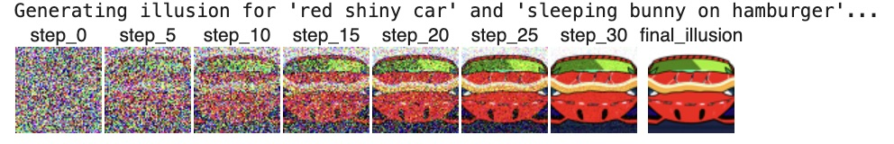
Hybrid Images
Low frequencies from one noise estimate (prompt A) are combined with high frequencies from another (prompt B). The resulting image appears as one scene up close and the other from a distance — the same principle as project 2.
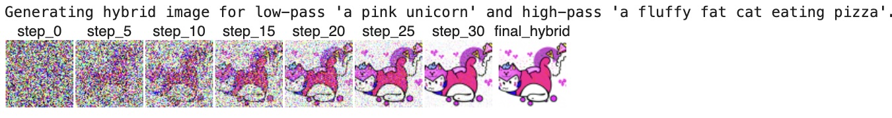
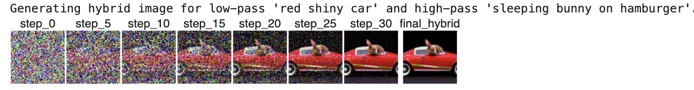